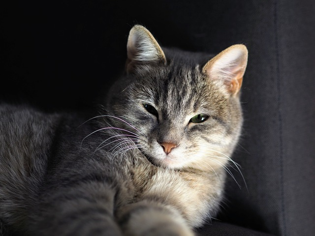

ฅ狸花猫ฅ
狸花猫是一种起源于中国古代的家猫。狸花猫身体健壮带有野性，皮毛有鱼骨刺或虎斑状斑纹，其头形呈钻石型，额头上通常有M字形斑纹，耳朵的倾斜角度与其他猫不同，眼睛呈大而圆的杏仁状，瞳色为发光的黄色或绿色。狸花猫智商较高，它可以清晰地理清周围环境中事物的关系，容易与人类进行互动。


狸花猫是一种起源于中国古代的家猫。狸花猫身体健壮带有野性，皮毛有鱼骨刺或虎斑状斑纹，其头形呈钻石型，额头上通常有M字形斑纹，耳朵的倾斜角度与其他猫不同，眼睛呈大而圆的杏仁状，瞳色为发光的黄色或绿色。狸花猫智商较高，它可以清晰地理清周围环境中事物的关系，容易与人类进行互动。
起源于波斯，可能是由短身型土耳其安哥拉猫繁衍而来。早期的波斯猫可能受土耳其安哥拉猫影响，体型纤细。100年后，演变成现今的体型。具浑圆身体、短四肢。小耳鼻，大眼。而波斯猫的著名分支金吉拉，原意指南美洲的小绒鼠，分为银、金虎班两种，毛色与该绒鼠相似而取其名。毛尖部分有颜色，毛底层则否。金吉拉是最早纯人工育种成功的品种之一，且于1894年获得承认。
头部仿佛由数个平面构成，额头平坦，由侧面看像蛇，故称作“眼镜蛇的头”。全身由带银光的蓝灰色长毛包着，眼睛为绿色。虽然有人说，以名字看，应源于北欧及欧俄北部，但正确起源仍是谜。其四肢细长、脸窄小，大耳朵极薄，具双层短毛。此猫性情内敛且温驯。
布偶猫是一种大型家猫，一只健康的成年雌性布偶猫体重在8至15英磅（3.6至6.8千克）之间，雄性则更重，一般在12至20英磅（5.4至9.1千克）之间。它们拥有蓝色的眼睛，一些猫展以其眼睛蓝色的纯净度来评判其优劣。其长毛多是针毛，缺乏浓厚的内层底毛。布偶猫的毛色大致有六种，即海豹色、巧克力色、蓝色、紫丁香色、红色和奶油色，花纹主要有三种，即双色、手套和重点色，由此衍生出山猫色和三色。
简称“美短”，头部为有点方的圆形，侧面有平缓的条纹。由于北美洲气候恶劣，为了在阴寒、雨天等环境求生，此猫便具有厚胸、粗颈、结实的半短身型体型，且体毛稍硬，形成稠密厚皮。此猫以银白色和黑色的古典虎斑闻名，被认可的毛色已超过30种，而且这种虎斑的腋窝的螺旋绞、额头的M形纹、背上的3条纹路，及肩膀的蝴蝶纹等，一般猫都没有。
头宽、圆而大。满月脸颊。突出的吻部。短、宽而直的鼻子，微微凹陷。下巴坚固，和鼻子构成垂线。耳大小中等，基部宽呈三角形。间距适中。 眼大而圆，间距大。颜色和被毛相协调为佳。颈短、粗，肌肉发达。英国短毛猫的老祖宗们给它们留下了吃苦耐劳的优良血统，这使它们对环境的适应性比一般的猫高的多，面对骤变或陌生的环境可以泰然处之。 相对于“美短”，一般简称为“英短”。
中等头部带有圆形感，有一双大耳朵。脸、四肢和尾巴有条纹，由喉到胸有横两条项链花纹。古埃及有一名为“巴蒂斯特”，外形如猫的女神，脸上有如埃及猫般的点状花纹。此猫被认为是古埃及人所饲养的猫。埃及猫是唯一不需人工繁殖形成点状花样的猫种。埃及猫被喻为“小型豹”，身上有着大大小小的点状花纹。至于额头，在埃及型和英国型有甲虫图案，但美国型则为M字。银色、青铜色和黑灰色是基本毛色，体毛柔滑。
有古老的历史，传说祖先曾被饲养于埃及法老的宫殿中，但1868年英国士兵从 埃塞俄比亚带回英国的猫才是它们真正的祖先。之后的品种改良才产生现在的样貌。被视为焦点的金色被毛，每根都有2－3个色带，所以当猫身移动时会有明暗变化，称为“阿比西尼亚虎斑”，除小面积的额头M字纹外，几乎没有条纹。中等体型，四肢有坚硬的球形趾支撑，故又名球猫。
梵猫是一种半长毛猫。双眼通常琥珀色或蓝色，或是两者的组合。一如其他的猫因白化基因影响，蓝色眼晴那边的耳朵容易产生听觉障碍。多数猫有三种不同的毛，保暖的护毛、隔热防水的芒毛和软而卷的内层绒毛，但土耳其猫只有一种：它的毛的质感像兔毛或 开士米羊毛，沾湿后可以迅速风干。凡湖的气候非常极端，梵猫会为适应天气而换毛。毛发在冬天会长厚，颈部的毛长得像个大襞襟。到温暖的夏天毛发会脱落很多，变得很短，除了尾巴依然像冬天一样，像瓶刷子。
原产于安卡拉。16世纪时，土耳其苏丹王曾将此种猫献给欧洲的贵族作礼物。此种猫体线幽美，四肢修长，尾巴覆盖着浓密的被毛，头部呈倒三角形，鼻长，有核桃形眼，目色和毛色相同。耳大且耳根宽，耳越往末端越细。传统颜色为白色，但现在毛色已明显多样化。
暹罗猫是世界著名的短毛猫，也是短毛猫的代表品种。种族原产于暹罗，故名暹罗猫。暹罗猫能够较好适应主人当地的气候，且性格刚烈好动，机智灵活，好奇心特强，善解人意。作为一种著名的宠物猫，暹罗猫能够较好适应主人当地的气候，且性格刚烈好动，机智灵活，好奇心特强，善解人意。暹罗猫喜欢与人为伴，可用皮带拴着散步。
属波斯品种，是由暹罗猫与波斯猫经由人工繁殖而来。由瑞典人贝斯培育而成，除了蓝眼睛和重点色毛皮外，其余特征等同于波斯猫。毛色和毛质如同暹罗猫，另加豹色点状 、蓝色点状 、巧克力色点状和淡紫色点状4种点状毛色。毛质同波斯猫，为光滑浓密的双层毛，触感柔细。
西伯利亚是家猫品种，目前已在俄罗斯几个世纪。另一个名字是西伯利亚森林猫。西伯利亚猫是一个古老的品种，可能是西伯利亚及乌克兰地区的家猫和当地的野猫的杂交后代。现在被认为是所有现代的长毛猫的祖先。与挪威森林猫有相似之处，很可能有密切的关系。它有丰厚而保温的毛，可以适应当地严寒的气候。性格活跃。个性很强，贪玩，感情丰富，依恋主人。声音柔和。
伯曼猫，又称波曼猫、巴曼猫、缅甸圣猫，是一种拥有长毛和重点色的家猫品种。伯曼猫体型较长，身上被毛主要是浅金黄色，脸，耳，腿尾等部分毛色较深，呈咖啡色或深灰色，四爪为白色。头部宽圆适中，脸颊丰满，鼻子中等大小。眼睛差不多为圆形，眼角稍吊，为蓝宝石色。耳朵为暗色，中等大小，尖成圆弧形。被毛长而细，且不易粘连。躯干毛色为浅色。胸部到腹部的毛呈波浪状。颇有特色的是伯曼猫的四肢末端为白色，被称为四肢踏雪，使它更加高贵。伯曼猫温文尔雅，非常友善，叫声悦耳，喜欢与人作伴，对其他猫也十分友好。
三色猫，又叫三毛猫、玳瑁猫，也有的人称呼它三花猫，指黑色、橘色与白色共存在身上的猫，亦称为玳瑁色。绝大多数三花猫都是母猫。公猫不能遗传父亲的颜色。母猫一定从父母身上各遗传一个颜色。忽略白色，公猫一定是单色的。母猫一定是单色或双色的。所以说，当一只猫咪的母亲为双色，再加上白色的基因，就有可能成为三花猫。三色猫是身上有三种颜色的猫，黑色、橘色与白色，三种色参杂在身上。
欧洲短毛猫强壮耐劳，适应能力强。暖色调带浅红色不讨人欢喜，而带有清晰虎纹猫同样也不讨人欢喜。然而这一种才有的缺陷很难克服，甚至同一窝猫仔颜色也是有深有浅。体型半短身型。但不是十分有棱有角的体型。毛色和毛质毛色繁多有黑、白、米、红、灰、双毛色等。也有古典虎斑等条纹。体毛短且浓密。目色依体毛而有不同特征骨架粗、肌肉发达毛型短而浓密，质地脆。
千岛短尾猫是一种源自千岛群岛、库页岛、勘察加半岛的猫品种，有短毛和长毛的变种，尾巴均极短，体型与曼岛猫、日本短尾猫有相似之处。千岛短尾猫的短毛品种是自然繁殖产生的，19世纪时已经出现在千岛群岛了。俄国人将其作为宠物培育，再加上拥有捕鼠能力，20世纪中叶之后传播到了欧洲其他国家。
挪威森林猫属于天然的猫种，列为第二类半长毛猫。挪威森林猫最特别的地方是这是唯一的猫种拥有两层毛且松软,尾巴如狐狸，长度接近体长且拥有非常长的毛发，猫卷著休息的时候，可以保暖。头型三角形，正面看是一个倒等边三角形，侧面的轮廓，从眉心至鼻尖有一个滑溜的斜坡形状。
苏格兰折耳猫是一种耳朵有基因突变的猫。这种猫在软骨部分有一个折，使耳朵向前屈折，并指向头的前方。由于这猫种最初在苏格兰发现，所以以它的发现地和身体特征而命名。其后，这猫种在美国继续繁殖，并演生成为今日的多个品种。现时苏格兰折耳猫有以下两对不同的特征：长毛猫种及短毛猫种，及折耳和竖耳猫种。